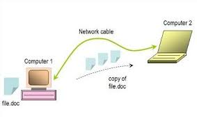
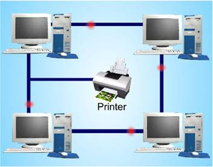
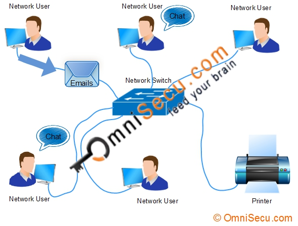

ហេតុអ្វីបានជាត្រូវការបណ្ដាញកុំព្យូទ័រ?¶
បណ្ដាញកុំព្យូទ័រជួយអោយអ្នកប្រើប្រាស់បណ្ដាញអាចចែកចាយresources និងក្នុងការធ្វើទំនាក់ទំនង។ អ្នកអាចស្រម៉ៃថាប្រសិនបើពិភពលោកនេះគ្មាន សារអេឡិចត្រូនិច(email) កាសែតអនឡាញ(online newspapers) ប្លុក(blogs) chat និងសេវាកម្មដទៃទៀតដែលផ្ដល់ដោយអុីនធឺណេត តើយ៉ាងណាដែរ?
ខាងក្រោមនេះគឺជាសារប្រយោជន៍នៃបណ្ដាញ៖
១. File sharing: បណ្ដាញកុំព្យូទ័រជួយអោយអ្នកប្រើប្រាស់អាចចែកចាយទិន្ន័យ(data files)
២. Harware sharing: អ្នកប្រប្រាស់អាចចែចាយឧបករណ៍អេឡិចត្រូនិចដូចជា ម៉ាសុីនព្រីន ម៉ាសុីនស្គែន CD-ROM, hard drives ជាដើម។
៣. Application sharing: អនុញ្ញាតអ្នកអាចប្រើប្រាស់ ឬក៏access ទៅលើapplicationមួយនៅលើកុំព្យូទ័រផ្សេងគ្នា(ឧបករណ៍នានា)នៅពេលតែមួយ។ គេនិយមនិយាយថា remote access ។
៤. User communication: បណ្ដាញអនុញ្ញាតអោយអ្នកប្រើប្រាស់ធ្វើការទំនាក់ទំនងគ្នាតាមរយៈ សារអេឡិចត្រូនិច(email) chat ឫvideo conferencing -ល-។
៥. Network gaming: មានgamesជាច្រើនដែលអាចអោយអ្នកលេងមានគ្នាច្រើន មកពីដំបន់ផ្សេងៗគ្នា។ ៦. Voice over IP (VoIP): គឺជាបដិវត្តថ្មីនៃទូរគមនាគមន៍ដែលអ្នកអាចឆ្លើយឆ្លងគ្នាតាមរយៈអុីនធឺណេត ហើយមានដំលៃថោក ជំនួសនៅការឆ្លើយឆ្លងដោយទូរសព្ទដែលមានដំលៃថ្លៃ។ ឧទាហរណ៍ អ្នកទំនាក់ទំនងគ្នាដោយប្រើប្រាស់ Skype។